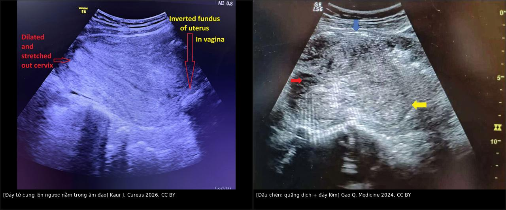
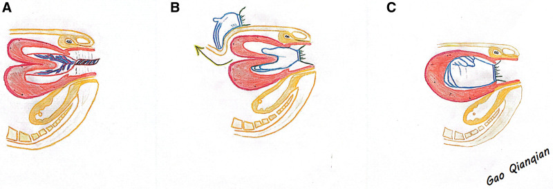
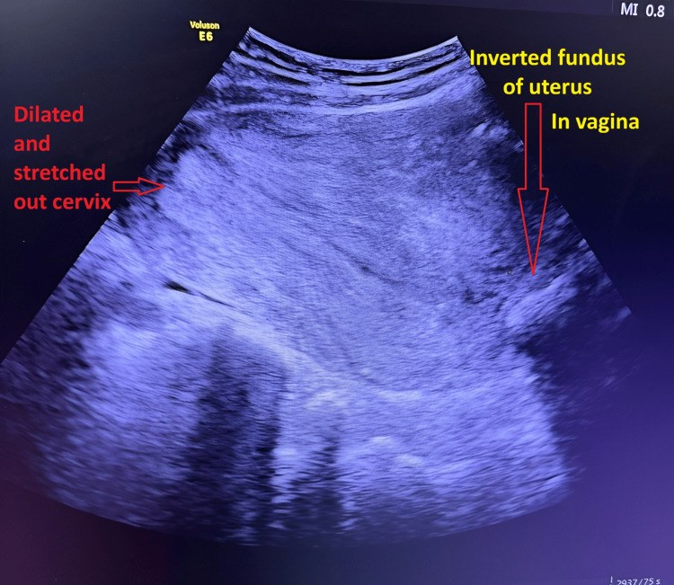
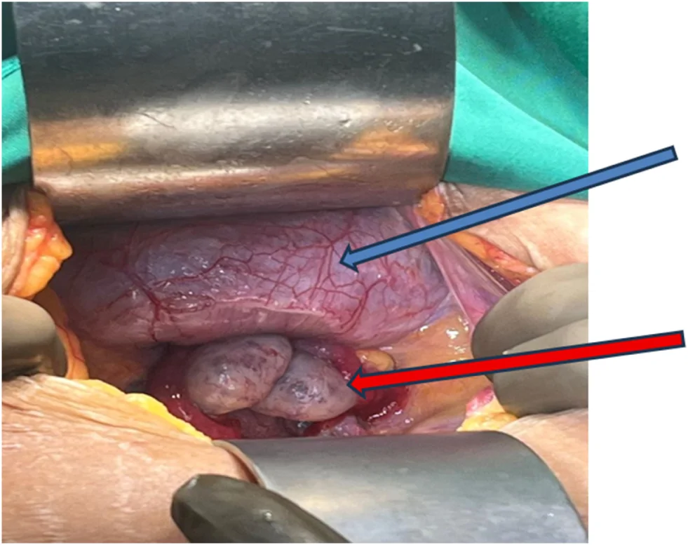
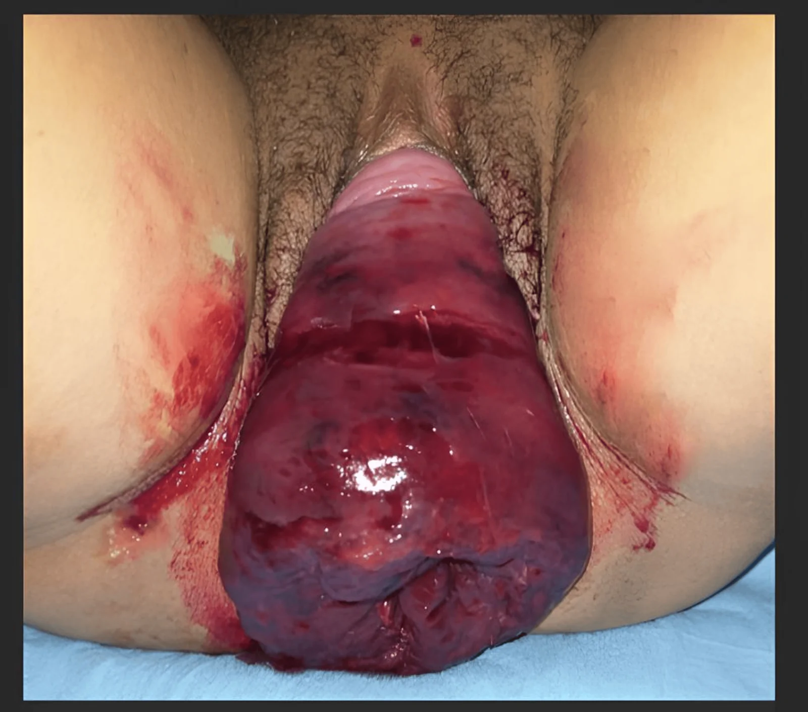

553 — Đảo ngược tử cung DO SINH (puerperal uterine inversion): cấp cứu sản khoa trong 30 phút đầu / Puerperal uterine inversion — the obstetric emergency of the third stage
Tags: pattern:dao-nguoc-tu-cung pattern:khoi-sa-qua-am-dao vung:tu-cung vung:am-dao protocol:sieu-am-cap-cuu score:do-1-4
Mức chắc chắn (certainty): tổng hợp y văn (literature synthesis) — số liệu quần thể từ nghiên cứu Nationwide Inpatient Sample 2004–2013 (AJOG 2017, PMID 28522320), kỹ thuật và tỉ lệ thành công từ ca nguyên văn/tổng quan có ảnh CC BY (PMC13224523, PMC13340646, PMC11049735, PMC13544666, PMC13571831, PMC11800658). Các ca dùng làm quiz đọc trực tiếp từ bài gốc.
1. Tổng quan bệnh học – cơ chế hình ảnh
- Định nghĩa: đáy tử cung lộn vào trong (về phía buồng tử cung) rồi đi qua cổ tử cung, có thể lộ ra ngoài âm hộ. Đây là cấp cứu sản khoa của giai đoạn 3 chuyển dạ, xảy ra ngay sau sinh — đa số trong 30 phút đầu (Sali 2026, PMC13571831).
- Phân loại theo thời gian: cấp (acute) < 24 giờ**; **bán cấp (subacute) 24 giờ – 4 tuần**; **mạn (chronic) > 4 tuần sau sinh (Marlina 2024, PMC11283650).
- Phân độ theo mức lộn (4 độ — dùng thống nhất trong bài):
- Độ 1: đáy tử cung lõm vào buồng nhưng chưa qua lỗ cổ trong (incomplete).
- Độ 2: đáy đã qua vòng cổ tử cung nhưng chưa tới tầng sinh môn.
- Độ 3: đáy tới tầng sinh môn.
- Độ 4: cả âm đạo lộn ra ngoài cùng tử cung (Marlina 2024; Gao 2024).
- Lưu ý: y văn có cách đánh số khác (một số bài gọi "độ 1 = chưa qua cổ") — khi đọc nguồn phải đối chiếu mô tả, đừng chỉ tin con số. Bài 544 dùng cách đánh số của Herath cho thể không do sinh.
- Dịch tễ (số liệu quần thể Mỹ, 8.294.279 ca sinh 2004–2013): 2,9/10.000 ca sinh (95% CI 2,8–3,0) — tức ~1/3.450; y văn khác nêu 1/2.000 – 1/20.000 (Sali 2026) hoặc 0,5–4/10.000 (Zhang 2026, PMC13224523). Tỉ lệ không đổi trong 10 năm.
- Kết cục (cùng nghiên cứu quần thể): băng huyết sau sinh 37,7%; truyền máu 22,4%; cần can thiệp phẫu thuật 6,0%; cắt tử cung 2,8%; tử vong mẹ 1 ca = 4,1/10.000 biến cố (~0,04%); nằm viện trung vị 3 ngày. Các series khác ghi PPH 37,7–86,7%, sốc 39–47% (Zhang 2026).
- Yếu tố nguy cơ: kéo dây rốn quá mức trước khi bánh nhau bong (hay gặp nhất — 5/10 ca trong một series), dây rốn ngắn, thai to, đa thai/đa ối (tử cung căng quá mức), nhau bám đáy, nhau cài răng lược (PAS), bóc nhau bằng tay, chuyển dạ nhanh (precipitous), MgSO₄/giãn cơ tử cung, dị tật tử cung, tiền sử đảo ngược tử cung, con so (Zhang 2026; Pelden 2026, PMC13544666).
- Sinh lý bệnh: (1) một vùng thành tử cung mất trương lực/kéo xuống → (2) đáy lõm rồi lộn qua cổ → (3) vòng thắt (constriction ring) hình thành ở cổ → nghẹt khối, chảy máu và phù nề tăng dần. Càng muộn, vòng thắt càng cứng → thay thế bằng tay càng khó.
- TẠI SAO sốc "nặng hơn lượng máu mất": ngoài giảm thể tích, còn thành phần thần kinh (neurogenic) do kéo giãn thần kinh đối giao cảm vùng chậu → mạch chậm + tụt huyết áp; vì vậy sốc có thể không tương xứng với lượng máu nhìn thấy (Kaur 2022, PMC11800658). Đây là lý do không được chờ "đủ máu mất" mới chẩn đoán.
- TẠI SAO hình ảnh trông như vậy (vật lý siêu âm):
- Mất đáy tử cung ở vị trí bình thường → trên mặt cắt dọc, tử cung mất cấu trúc "quả lê"; thay vào đó là khối đặc trong âm đạo/cổ tử cung.
- Dấu chén (cupping)/"target sign": đáy lộn ngược là một khối giảm–trung âm ở trung tâm, được bao bởi quầng dịch (plasma layer) và thành tử cung dày → tạo hình chén/chữ U (Gao 2024 mô tả: mũi tên xanh = lớp dịch thành trước, mũi tên đỏ = cấu trúc chén sau lộn ngược, mũi tên vàng = mô đáy lộn vào buồng).
- Vì sao có quầng dịch: khoang giữa thanh mạc lộn vào và thành âm đạo chứa dịch/phù → vô âm, tạo viền tối trên siêu âm — chính là "khe" giải phẫu bị đảo.
- Không cần đo "mm" để chẩn đoán: đây là chẩn đoán lâm sàng; siêu âm chỉ xác nhận tại giường và loại trừ nguyên nhân khác, không được làm chậm thay thế tử cung.
- Ngưỡng định lượng cần nhớ: 2,9/10.000; PPH 37,7%; truyền máu 22,4%; cắt tử cung 2,8%; thay thế bằng tay thành công 80–100%; O'Sullivan 3–5 L nước muối ấm, 3–5 phút; bóng chèn/condom thành công ~96,7%; PPH OR 16,89 khi có đảo ngược tử cung.
2. Mẫu hình + chẩn đoán phân biệt theo vị trí (gamut)
- Ba câu hỏi lâm sàng chốt (đặt trước khi nhìn máy):
- Sờ bụng có thấy đáy tử cung không? (đảo ngược: KHÔNG sờ thấy đáy, bụng dưới mềm/lõm).
- Khám âm đạo có khối không? Có thấy cổ tử cung không? (đảo ngược: khối đỏ, mềm, không thấy cổ/lỗ cổ; đảo ngược độ 1–2 có thể chỉ "cổ tử cung dày, lỗ cổ mở").
- Máu mất có tương xứng với sốc không? (sốc không tương xứng, mạch chậm → gợi ý thành phần thần kinh của đảo ngược).
- Gamut "băng huyết sau sinh + KHÔNG sờ thấy đáy tử cung":
- Đảo ngược tử cung (bài này) — khối trong âm đạo, không thấy đáy.
- Đờ tử cung (atony) — tử cung to, mềm, đáy còn, xoa thấy co.
- Sót nhau (RPOC) — tử cung còn, lòng tử cung có khối; chảy máu sau sinh muộn.
- Rách đường sinh dục/âm đạo, tụ máu âm đạo–đáy chậu — tử cung bình thường, khối máu ở thành âm đạo.
- Vỡ tử cung — đau, bụng phản ứng, thai/máu ổ bụng, mất liên tục cơ.
- Rối loạn đông máu — chảy máu rỉ rả, tử cung co tốt.
- Gamut "khối sa qua âm đạo ngay sau sinh":
- Đảo ngược tử cung (độ 3–4).
- U xơ/polyp có cuống sa ra — thấy cổ tử cung, có cuống (bài 544).
- Sa tử cung/âm đạo — thấy cổ ở đỉnh, niêm mạc âm đạo.
- Khối ác tính hoại tử sa lộ — bề mặt loét, mùi hôi.
- Máu tụ/khối máu âm đạo — bề mặt niêm mạc, không có cấu trúc tử cung.
- Chốt phân biệt: thấy lỗ vòi trứng ở đỉnh khối = đảo ngược; thấy cổ tử cung + cuống = u xơ/polyp; thấy cổ ở đỉnh khối = sa sinh dục.
3. Bảng so sánh phân biệt (ma trận đối chiếu)
| Thực thể (entity) | Hình ảnh/lâm sàng điển hình | Chốt vào (rule-in) | Chốt loại (rule-out) | Gợi ý xác nhận |
|---|---|---|---|---|
| Đảo ngược tử cung do sinh (bài này) | Không sờ thấy đáy tử cung; khối đỏ trong âm đạo; US: dấu chén, khối trong âm đạo, mất cấu trúc tử cung bình thường | Không thấy đáy + khối trong âm đạo + sốc/PPH ngay sau sinh | Thấy đáy tử cung trên bụng → không phải đảo ngược | Lâm sàng là chốt; US tại giường ± MRI sau ổn định |
| Đờ tử cung (atony) | Tử cung to, mềm, đáy còn, xoa co lại; máu đỏ tươi ồ ạt | Đáy tử cung còn + mềm + đáp ứng thuốc co | Không sờ được đáy → nghi đảo ngược | Xoa đáy + oxytocin; US |
| U xơ/polyp có cuống sa ra | Khối có cuống nối vào cổ, cổ tử cung vẫn thấy, thường không sốc cấp | Cổ tử cung hiện diện + cuống mạch | Không thấy cổ, không có cuống → đảo ngược | Soi/cắt + mô bệnh; MRI nếu cần |
| Sa tử cung–âm đạo | Khối sa có cổ tử cung ở đỉnh, niêm mạc âm đạo; POP‑Q dương | Cổ tử cung ở đỉnh + luồn được que | Mất cổ, buồng chữ U → đảo ngược | Khám; MRI |
| Sót nhau (RPOC) | Chảy máu muộn, tử cung còn, lòng tử cung khối tăng âm, Doppler có mạch | Tử cung còn + khối trong lòng + chảy máu muộn | Không có khối trong lòng, đáy mất → đảo ngược | US; nạo hút |
| Vỡ tử cung | Đau dữ dội, bụng phản ứng, thai suy, dịch ổ bụng, mất liên tục cơ | Mất liên tục cơ tử cung + dịch ổ bụng | Cơ liên tục, đáy mất → đảo ngược | US cấp + CT/mổ |
| Đảo ngược KHÔNG do sinh (bài 544) | Khối sa mạn, 32% ác tính, u xơ/sarcoma trong lòng | Không liên quan thai kỳ + khối sa mạn + u trong buồng | Bối cảnh ngay sau sinh → thể do sinh | MRI + mô bệnh |

Trái: siêu âm bụng — đáy tử cung lộn ngược nằm trong âm đạo, cổ tử cung giãn và căng; phải: dấu chén với quầng dịch thành trước (mũi tên xanh), cấu trúc chén (mũi tên đỏ) và mô đáy lộn vào buồng (mũi tên vàng). Nguồn: Kaur J et al., Cureus 2026 (PMC13340646), CC BY 4.0 + Gao Q et al., Medicine 2024 (PMC11049735), CC BY 4.0. Ảnh ghép letterbox, giữ nguyên tỷ lệ.Dấu hiệu đọc chuẩn xác
- Siêu âm không phải "cửa chốt": chẩn đoán dựa vào khám bụng + khám âm đạo. Siêu âm giúp xác nhận và loại trừ (đờ tử cung, sót nhau, dịch ổ bụng) nhưng không được trì hoãn thay thế — ca nguyên văn cho thấy bỏ qua hình ảnh để mổ ngay khi sốc tiến triển là quyết định đúng (Kaur 2022).
- Độ 2 trên siêu âm có thể chỉ thấy "tử cung ngắn, cổ dày", dễ bị đọc là u xơ sa/polyp — nếu không thấy đáy tử cung trên bụng, hãy nghĩ đảo ngược trước.
- MRI (khi bệnh nhân đã ổn định, chẩn đoán chưa rõ hoặc nghi nguyên nhân u): buồng tử cung chữ U, đáy lộn ngược dày, "mắt bò", vòi–dây chằng tròn chạy vào trung tâm (bài 544 mô tả chi tiết).
4. Protocol cấp cứu + phân độ
- Nguyên tắc vàng: chẩn đoán bằng tay, xử trí ngay, không chờ phim. Thứ tự:
- Gọi hỗ trợ (sản khoa, gây mê, điều dưỡng, huyết học) + 2 đường truyền lớn, máu/crystalloid, cross-match.
- Đặt sonde tiểu (làm rỗng bàng quang — bàng quang rỗng giúp thay thế dễ hơn và tránh chấn thương).
- Giảm đau/giãn cơ tử cung: terbutaline 0,25 mg dưới da, nitroglycerin 50–100 µg TM từng liều, hoặc MgSO₄ 5 g TM (ca Gao 2024 dùng 5 g); gây mê toàn thân nếu cần — vì vòng thắt cổ tử cung là trở ngại chính. Cảnh báo: giãn cơ có thể làm nặng chảy máu — phải song song hồi sức (Kaur 2022).
- Johnson maneuver (đầu tay): đặt lòng bàn tay/lòng bàn tay nắm vào đáy lộn ngược, đẩy dọc trục âm đạo–tử cung, đều và chậm; tay kia ép trên bụng để giữ tử cung. Thành công 80–100% (Zhang 2026). Thực hiện càng sớm càng tốt trước khi vòng thắt hình thành.
- Nếu thất bại — O'Sullivan (thủy lực): bịt lỗ âm đạo (Alice clamp/bóng), bơm 3–5 L nước muối ấm vào âm đạo → áp lực thủy tĩnh đẩy tử cung về; thành công trong 3–5 phút, phù hợp khi chưa có vòng thắt cứng (Zhang 2026).
- Bóng chèn/condom catheter: bơm 700 mL – 2,5 L tùy ca; trong series 8 ca, 6 ca thủy lực bằng condom catheter thành công; tổng hợp y văn ~96,7% (Lakshmy 2019 dẫn trong PMC9038538).
- Phẫu thuật khi thất bại: Huntington (mở bụng, kéo dây chằng tròn/thành tử cung bằng kẹp không sang chấn + đẩy từ âm đạo) — phù hợp độ 1–2; Haultain (rạch thành sau vòng thắt rồi thay thế) hoặc Dobin (rạch thành trước) — cho độ 3–4 có vòng thắt cứng; cắt tử cung khi hoại tử/không cầm máu (2,8% trong nghiên cứu quần thể).
- Sau khi thay thế: oxytocin/uterotonic để tử cung co, xoa đáy nhẹ, bóng chèn lòng tử cung (Bakri 360 mL trong ca PMC11800658) nếu chảy máu, kháng sinh phổ rộng (piperacillin–tazobactam 4,5 g q8h trong ca PMC11800658), theo dõi hemoglobin, nước tiểu, dấu hiệu nhiễm trùng.
- Xử trí nhau: nếu nhau còn dính, thay thế tử cung trước rồi mới bóc nhau (bóc nhau khi tử cung còn lộn làm tăng chảy máu và khó cầm); nếu nhau đã bong và đang chảy máu nhiều, thay thế ngay rồi kiểm soát lòng tử cung.
- Phòng ngừa (giai đoạn 3 chuyển dạ): oxytocin sau khi vai trước ra để tử cung co tốt; kéo dây rốn có kiểm soát đúng kỹ thuật, không kéo mạnh khi tử cung chưa co; tránh kéo dây rốn khi nhau chưa bong; nhận diện sớm đáy tử cung mất (Zhang 2026).
- Theo dõi sau thay thế: siêu âm kiểm tra (đáy về đúng vị trí, không tụ dịch), theo dõi 24 giờ vì nguy cơ đảo ngược tái phát/đờ tử cung; bóng chèn dự phòng khi cổ tử cung mở rộng (patulous) (Yang 2026, PMC12757945).

(A) Tử cung đảo ngược + bánh nhau còn dính; (B) đáy và thân tử cung đã lộn vào lỗ cổ — đặt đáy vào lòng bàn tay phải, đẩy đều và chậm dọc trục tiểu khung, tay trái ép trên bụng để giữ tử cung, phần gần cổ tử cung về trước; (C) sau khi về đúng giải phẫu, nắm tay giữ đáy + uterotonic, rồi rút tay chậm theo cơn co. Nguồn: Gao Q et al., Medicine 2024 (PMC11049735), Fig. 2, CC BY 4.0.flowchart TD
A[Băng huyết sau sinh + KHÔNG sờ thấy đáy tử cung] --> B[Chẩn đoán ĐẢO NGƯỢC TỬ CUNG: khám bụng + âm đạo]
B --> C[Hồi sức: 2 đường truyền, máu, sonde tiểu, gọi hỗ trợ]
C --> D[Giãn cơ tử cung: terbutaline / nitroglycerin / MgSO4 / gây mê]
D --> E[Johnson maneuver: đẩy đáy dọc trục, đều và chậm]
E --> F{Thay thế được?}
F -->|Có| G[Uterotonic + xoa đáy + kháng sinh]
F -->|Không| H[O'Sullivan: bịt lỗ âm đạo + 3-5 L nước muối ấm]
H --> I{Thay thế được?}
I -->|Có| G
I -->|Không| J[Bóng chèn/condom catheter 700 mL - 2,5 L]
J --> K{Thay thế được?}
K -->|Có| G
K -->|Không| L["Mổ: Huntington (độ 1-2) / Haultain-Dobin (độ 3-4)"]
L --> M{Thành công?}
M -->|Có| G
M -->|Không| N[Cắt tử cung khi hoại tử/không cầm máu]
G --> O[Bóng chèn lòng tử cung nếu còn chảy máu + theo dõi 24h]
O --> P[Siêu âm kiểm tra + theo dõi nhiễm trùng, thiếu máu]
5. Biến thể bình thường và cạm bẫy
- Cạm bẫy 1 — chờ siêu âm/MRI: đảo ngược tử cung là chẩn đoán lâm sàng; mỗi phút chậm làm vòng thắt cứng hơn, mất máu nhiều hơn. Ca PMC11800658 bỏ qua hình ảnh để mổ khi sốc tiến triển là bài học đúng.
- Cạm bẫy 2 — nhầm độ 1–2 với "u xơ sa/polyp": đảo ngược độ 1–2 không có khối lộ rõ, chỉ thấy cổ tử cung dày, lỗ cổ mở, đáy không sờ thấy → dễ bị cắt "polyp" hoặc nạo và làm thủng tử cung. Không thấy đáy = nghĩ đảo ngược.
- Cạm bẫy 3 — sốc "không tương xứng": mạch chậm + tụt huyết áp sau sinh có thể do thành phần thần kinh, không chỉ do mất máu; không chờ hemoglobin tụt mới xử trí. Ngược lại, không được cho rằng sốc nhẹ thì không có đảo ngược.
- Cạm bẫy 4 — kéo dây rốn "để lấy nhau" khi tử cung chưa co: đây là nguyên nhân hàng đầu; trong series 10 ca, 5 ca có kéo dây rốn trước khi nhau bong (Zhang 2026).
- Cạm bẫy 5 — xoa đáy tử cung trước khi thay thế: xoa trên đáy lộn ngược làm tăng đau và tăng chảy máu, không giúp co; phải thay thế trước, rồi mới xoa/uterotonic.
- Cạm bẫy 6 — bỏ sót biến chứng muộn: ca viêm tụy thiếu máu sau đảo ngược + PPH + ngừng tim (14 đơn vị hồng cầu, 18 đơn vị huyết tương, 3 g fibrinogen) cho thấy sốc kéo dài gây thiếu máu tạng — theo dõi amylase, chức năng tạng ở ca nặng (Kodama 2025, PMC12357108).
- Cạm bẫy 7 — "đảo ngược tái phát": y văn ghi tiền sử đảo ngược là yếu tố nguy cơ, nhưng tỉ lệ tái phát chính xác chưa rõ trong các nguồn đã đọc → không trích số; thực hành là theo dõi sát 24 giờ + bóng chèn khi cổ mở rộng.
- Biến thể bình thường dễ nhầm: cổ tử cung giãn rộng ngay sau sinh trên siêu âm; tử cung co cứng (contraction ring); bàng quang căng đẩy tử cung lên (đặt sonde tiểu trước khi kết luận); máu tụ âm đạo giả khối.
- Satisfaction of search: thấy "khối sa" rồi dừng → bỏ đảo ngược độ 1–2, vỡ tử cung, sót nhau. Luôn sờ đáy tử cung bằng tay kia trong khi khám âm đạo.
6. Tự lượng giá — Blind Quiz ngay trên trang tĩnh
Ca 1 — Sản phụ ngay sau sinh, máu âm đạo nhiều, bụng không sờ được đáy tử cung. Nhìn siêu âm, mô tả trước.

- Gợi ý lâm sàng: sinh đường âm đạo, chảy máu tăng nhanh, khám thấy khối đỏ trong âm đạo; không sờ thấy đáy tử cung trên bụng.
- Câu hỏi: (A) Cấu trúc lớn trong âm đạo là gì? (B) Cổ tử cung ra sao? (C) Bước xử trí đầu tiên?
Bấm để hiện đáp án (findings + chẩn đoán)
- Dấu hiệu: đáy tử cung lộn ngược nằm trong âm đạo; cổ tử cung giãn và căng; không thấy tử cung ở vị trí bình thường.
- Chẩn đoán: đảo ngược tử cung do sinh cấp. Xử trí: hồi sức + giãn cơ + Johnson maneuver ngay; không chờ thêm hình ảnh.
- Nguồn ảnh: Kaur J et al., Cureus 2026, PMC13340646, Fig. 1, CC BY 4.0.
Ca 2 — Mổ bụng vì thay thế bằng tay thất bại. Nhìn ảnh trong mổ, mô tả trước.

- Gợi ý lâm sàng: sau sinh, thay thế bằng tay không thành công dù đã giãn cơ; Hb 7,8 g/dL, đang truyền máu.
- Câu hỏi: (A) Cấu trúc nào bị kéo vào "miệng phễu"? (B) Vì sao thay thế bằng tay thất bại? (C) Thủ thuật tiếp theo là gì?
Bấm để hiện đáp án (findings + chẩn đoán)
- Dấu hiệu: bàng quang (mũi tên xanh) và hai buồng trứng + vòi trứng (mũi tên đỏ) bị kéo vào vùng đáy lộn ngược — hình "lọ hoa/miệng phễu"; tử cung đảo ngược nằm dưới.
- Chẩn đoán: đảo ngược tử cung cấp, thất bại thay thế bằng tay do vòng thắt cổ tử cung đã hình thành. Tiếp theo: Huntington (kéo dây chằng tròn/thành tử cung bằng kẹp không sang chấn + đẩy từ âm đạo) — ca này thành công.
- Nguồn ảnh: Pelden T et al., Int J Surg Case Rep 2026, PMC13544666, Fig. 1, CC BY 4.0.
Ca 3 — Sản phụ 3 giờ sau sinh, khối đỏ lớn lộ ra ngoài âm hộ (ảnh đại thể trong đáp án).
- Gợi ý lâm sàng: sinh thường tại nhà, 3 giờ sau nhập viện, huyết áp 90/60, mạch 115, Hb 9,6 g/dL; khối đỏ lớn lộ ra ngoài âm hộ, không thấy cổ tử cung.
- Câu hỏi: (A) Đây là độ mấy? (B) Bề mặt khối là niêm mạc gì? (C) Xử trí trong 10 phút tới?
Bấm để hiện đáp án (ảnh đại thể + findings + chẩn đoán)

- Dấu hiệu: khối đỏ lớn lộ ra ngoài âm hộ, bề mặt là nội mạc tử cung, không nhận diện được cổ tử cung/lỗ cổ — độ 3–4 (đáy tới tầng sinh môn hoặc âm đạo cùng lộn ra).
- Xử trí: hồi sức + giãn cơ (gây tê tủy sống/gây mê) + Johnson maneuver; ca này thay thế thành công, máu mất ~500 mL, Hb sau 9,6 g/dL, dùng kháng sinh dự phòng.
- Bài học: khối lộ ra ngoài không có nghĩa là "sa tử cung" — bề mặt nội mạc và mất cổ tử cung là chốt.
- Nguồn ảnh: Sali M et al., Cureus 2026, PMC13571831, Fig. 1, CC BY 4.0.
Ca 4 — Ảnh ghép hai ca: cùng dấu chén. Vì sao siêu âm không được làm chậm xử trí?
- Gợi ý: một ca chẩn đoán trong 3 giờ đầu, một ca chẩn đoán muộn hơn; cả hai đều có PPH.
- Câu hỏi: Dấu hiệu chung là gì? Nếu siêu âm bình thường thì có loại trừ đảo ngược không?
Bấm để hiện đáp án (findings + chẩn đoán)
- Dấu hiệu chung: mất đáy tử cung ở vị trí bình thường, khối trong âm đạo, dấu chén/quầng dịch quanh đáy lộn ngược.
- Chốt: không loại trừ — đảo ngược độ 1–2 có thể khó thấy; chẩn đoán lâm sàng (không sờ thấy đáy + khối âm đạo) quan trọng hơn hình ảnh; không chờ siêu âm khi huyết động không ổn.
- Nguồn: Kaur J et al., Cureus 2026 (PMC13340646) + Gao Q et al., Medicine 2024 (PMC11049735), CC BY 4.0.
Bài liên quan chéo
- 500 – Tổng quan Hệ Vú & Sản Phụ khoa
- 532 – U xơ tử cung trong thai kỳ & thoái triển đỏ (u xơ có cuống sa ra)
- 544 – Đảo ngược tử cung KHÔNG do sinh (thể mạn, 32% ác tính)
- 550 – Thai sớm, sảy thai & thai ngoài tử cung
- 560 – Nhau cài răng lược (PAS) & cấp cứu sản (yếu tố nguy cơ)
- 565 – Sàng lọc hình thái & Doppler sản khoa
Ảnh
- 5 ảnh gốc + 1 ảnh ghép. Nguồn, tác giả, giấy phép từng ảnh trong
images/CREDITS.md. - Ca 3 là ảnh đại thể nhạy cảm — đặt trong khối đáp án ẩn để người đọc chủ động mở.
Không dùng để chẩn đoán độc lập khi chưa có người hướng dẫn.